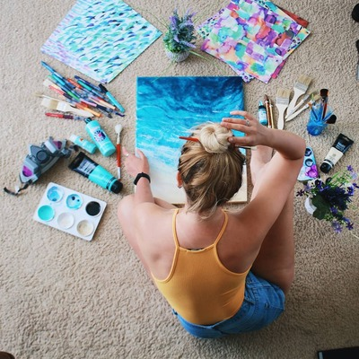

ABOUT ME
As a multilingual artist and web designer in training, I carry an international perspective that informs my design philosophy. My experiences managing my own art business have honed my resilience, entrepreneurial spirit, and ability to manage multifaceted projects. By incorporating my creativity into my technical skills, I offer a unique blend of artistic intuition and web design knowledge. You'll find in me a dedicated, highly creative individual who seeks to combine art and technology to create impactful digital experiences
If you would like to download my resume, click here.
Education
Wake Technical Community College - Raleigh, NC
January 2021 - present
Associate in Information Technology: Web Design
Volgograd State Institute of Arts
September 2008 - July 2012
College Degree in Fine Arts
High School #81 - Volgograd, RU
1999 - 2008
High school or equivalent
Work Experience
Epoxy Resin Artist
Maria Risen Art - Cary, NC
February 2018 - Present
I have been making resin art for over two years now and making high quality wall art and functional art décor. These are paintings, coasters, cheese plates, trays, watches, and even tables. I sell my art online to various countries and cities in the United States and participate in fairs and exhibitions in North Carolina and Florida. In addition to creating designs for my products and production, my daily tasks are:
Photography Freelancer
Maria Risen Photography - Cary, NC
May 2016 - July 2021
My work included editing the photographs in various software including Photoshop, Lightroom, Capture One, and VSCO
Assistant Manager of Child Nutrition Services
Davis Drive Elementary - Cary, NC
February 2019 to March 2020
I started working as a cook at Davis Drive Elementary, but within a couple of months, I was promoted to Assistant Manager of Child Nutrition Services. I coordinated resources between locations, performed opening and closing procedures, and acted as the manager in their absence. During my tenure from February 2019 to March 2020, my daily tasks were:
Photography and Art Teacher
School of Photography "Mir Iskusstva" - Volgograd, RU
February 2017 - October 2017
I worked as a Photography Teacher at a Kid's Photography School, which was a State Nonprofit Organization up to moving from Russia to the US. I taught students aged 7 to 14.
My role was to help them acquire skills in handling photographic equipment, express themselves through photography, and develop their creative potential. I also focused on fostering their sense of form, style, and aesthetic taste. Students had the opportunity to explore roles as directors, set designers, and models. During the classes my daily tasks were: